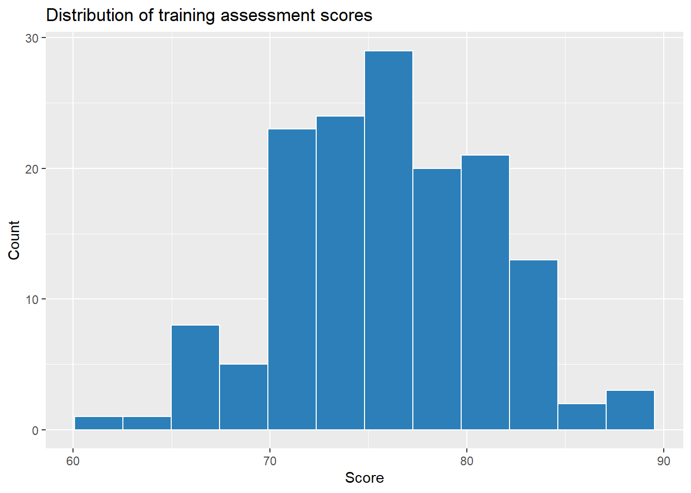

Instructor answer key: tables, graphs, descriptive statistics, and the executive summary
Author
QBA 5330
Note
This is an instructor answer key for the three Part 3 practice examples (3A, 3B, 3C), not a student handout. Every number, table, and plot below comes from actually running the code against the real files in data/.
# A tibble: 4 × 2
region n
<chr> <int>
1 East 50
2 North 46
3 South 53
4 West 51
Table 2: a grouped summary (mean servings_per_day by region)
ns |>group_by(region) |>summarize(mean_servings =mean(servings_per_day), n =n())
# A tibble: 4 × 3
region mean_servings n
<chr> <dbl> <int>
1 East 3.37 50
2 North 3.41 46
3 South 3.02 53
4 West 3.21 51
Graph: histogram of household_income
ggplot(ns, aes(x = household_income)) +geom_histogram(bins =15, fill ="#2c7fb8", color ="white") +labs(title ="Distribution of household income", x ="Household income ($)", y ="Count")
ns |>count(region) |>mutate(proportion = n /sum(n))
# A tibble: 4 × 3
region n proportion
<chr> <int> <dbl>
1 East 50 0.25
2 North 46 0.23
3 South 53 0.265
4 West 51 0.255
Example 3B: Executive Summary Sprint
Using the real output from 3A:
Average household income across the 200 surveyed households was about $54,600 (median $53,700), with a typical household’s income varying from that average by roughly $11,900. Average daily fruit-and-vegetable servings were fairly similar across all four regions, ranging narrowly from about 3.0 servings in the South to 3.4 in the North, a gap of less than half a serving. Because no single region stands out as driving meaningfully healthier eating habits, a marketing campaign built around regional targeting would have little real signal to work with here; a national approach, or one built around income rather than region, looks more promising.
What this models for students: every sentence uses a number that was actually computed above, and every sentence does something with that number (compares it, questions whether it’s decision-relevant, states an implication) rather than simply reporting it. Note also that this is an honest “we didn’t find much of a regional story” summary, not a forced dramatic finding, and that’s still a strong, usable executive summary.
Example 3C: Group Debug Sprint — Fix the Broken Report
The broken starter (hand this out or project it)
library(tidyverse)train <-read_csv("data/training_program_anova.csv")ggplot(train, aes(x =row_number(), y = score)) +geom_col()mean(train$program)
Error 1: a bar chart of a quantitative variable’s raw values, instead of a histogram.
ggplot(train, aes(x = score)) +geom_histogram(bins =12, fill ="#2c7fb8", color ="white") +labs(title ="Distribution of training assessment scores", x ="Score", y ="Count")

Error 2: mean() computed on a categorical variable.program (A, B, or C) has no numeric meaning to average; the fix is a frequency table or a proportion, not a mean.
train |>count(program) |>mutate(proportion = n /sum(n))
# A tibble: 3 × 3
program n proportion
<chr> <int> <dbl>
1 A 38 0.253
2 B 53 0.353
3 C 59 0.393
Error 3: a weak executive-summary sentence that restates a calculation instead of interpreting it.
Weak (what was handed out): “The average score was calculated.”
Fixed: “Average assessment scores across all 150 participants were about 76 points (median 76.3, typical variation of about 5.2 points), with Program C the most commonly completed program (59 of 150 participants, about 39%). Because scores are fairly tightly clustered around the average regardless of program, there’s no obvious sign yet that one program produces meaningfully different results, worth confirming with a formal comparison (an ANOVA, covered later in this course) before recommending that the company favor one program over another.”
What to check when grading a group’s fix: did they change the graph type (not just relabel the broken one), did they replace the mean with a statistic that actually applies to a categorical variable, and does the rewritten sentence interpret the numbers rather than just describe that a calculation happened?